NPCS
Personagens vivos com os quais se pode interagir
Sonhadores
Para proteger o receptáculo, os Sonhadores dormem.
Através de sua devoção, Hallownest permanece eterna.
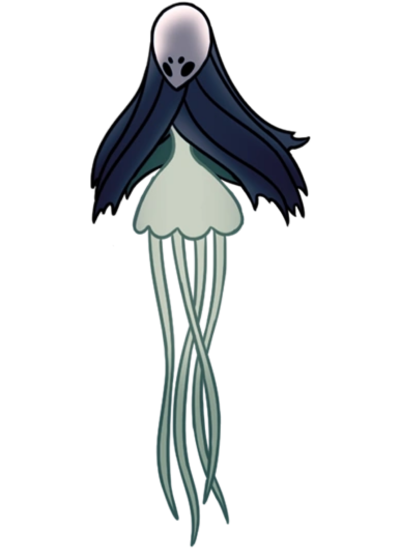
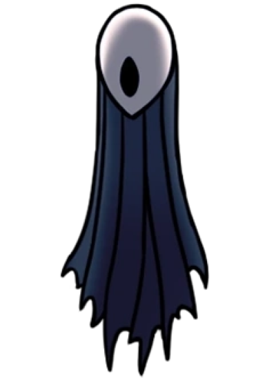
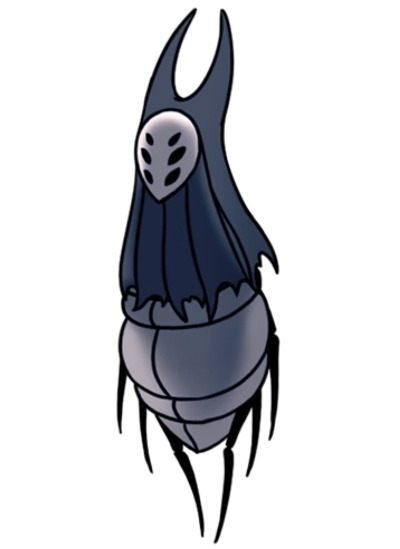
Trupe Grimm
Acenda a Lanterna do Pesadelo. Invoque a Trupe.
Viajam do reino dos Pesadelos até onde a lanterna tenha sido acessa e coletam as Chamas do Pesadelo que alimenta o ser que os escraviza
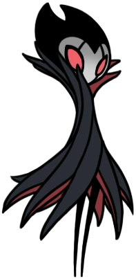
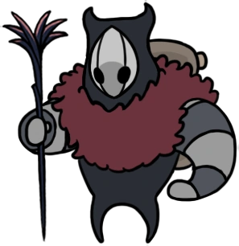
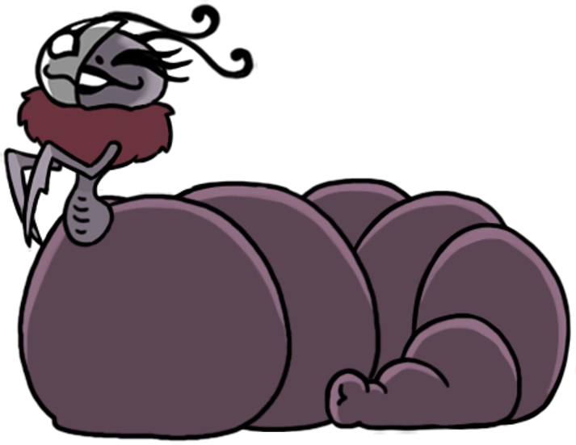
Dirthmound
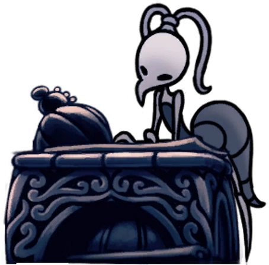
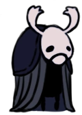
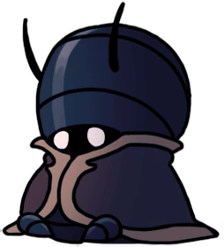
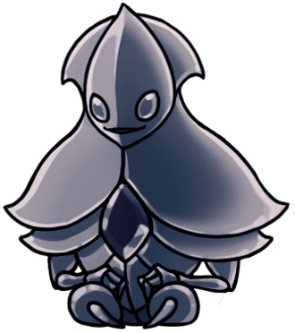
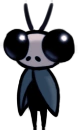
Encruzilhada Esquecida
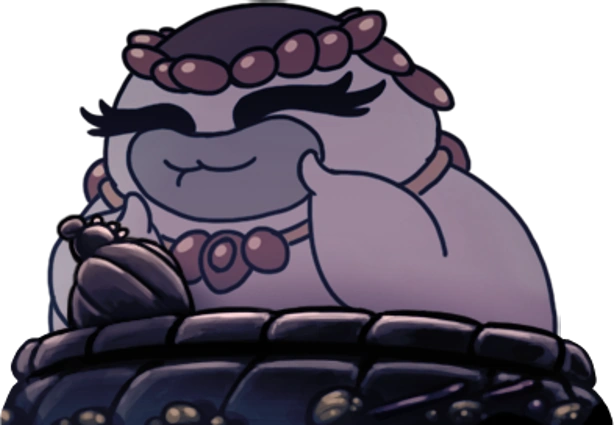
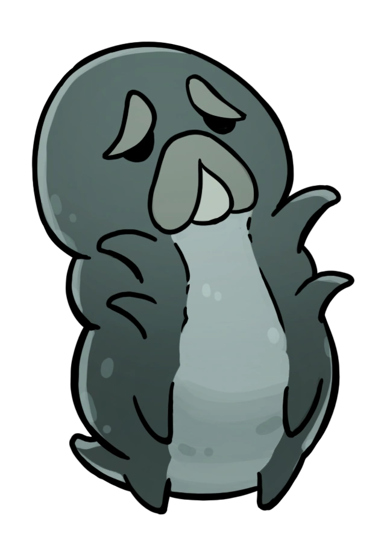

Caminho verde
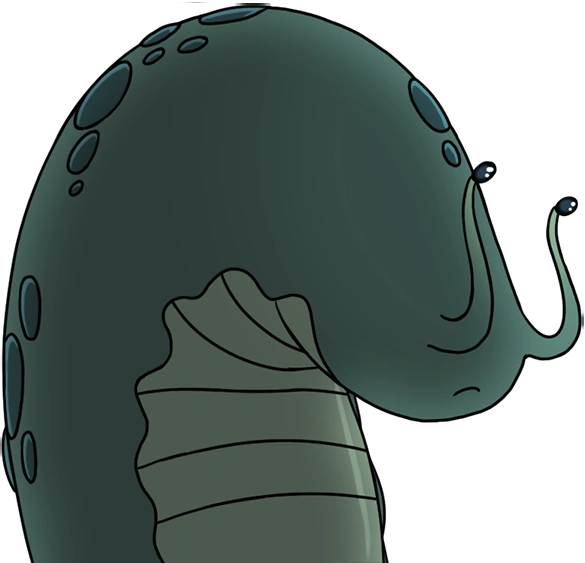
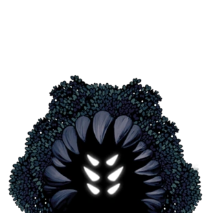
Pico de Cristal
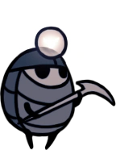
Hermos Fúngicos
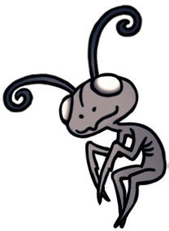
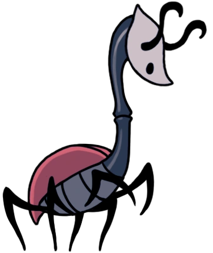
Cidade das Lágrimas
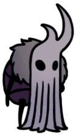
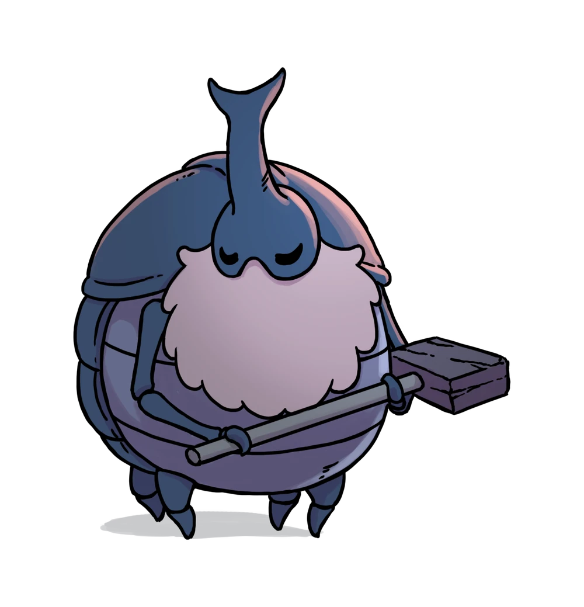
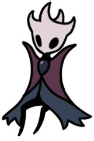
Hidrovia Real

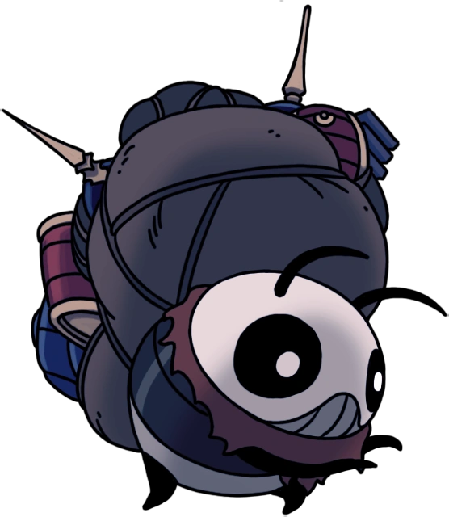
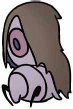
Cânion da Névoa
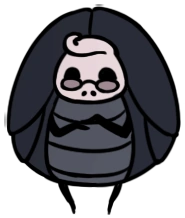
Terra do Descanso
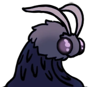
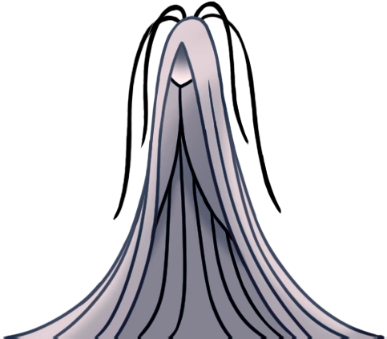
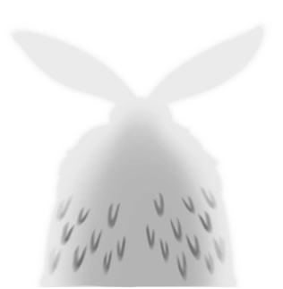
Jardins da rainha
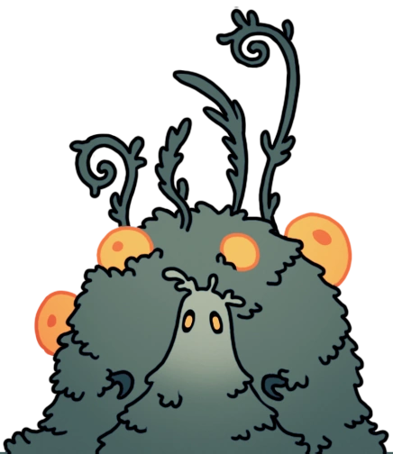

Bordas do Reino

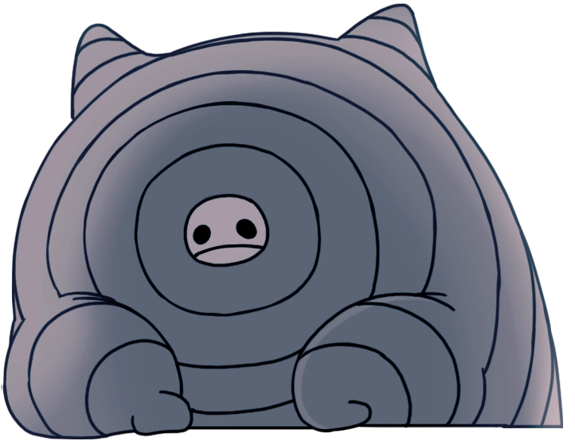
Mestres do ferrão
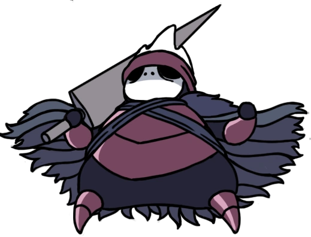
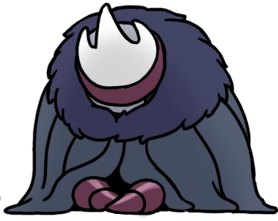
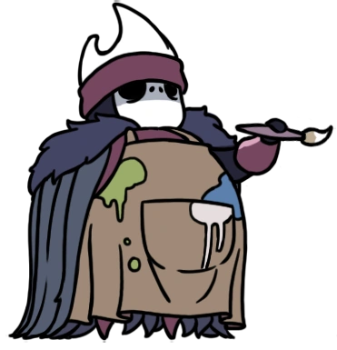
Ninho Profundo
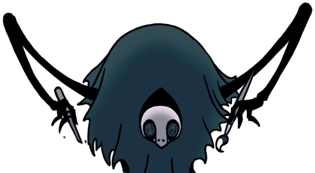
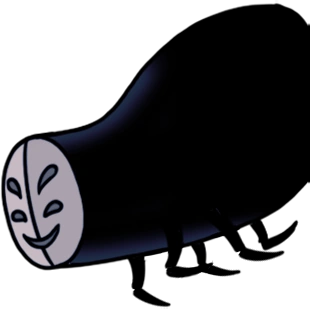
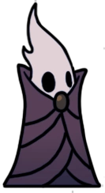
Palácio Branco
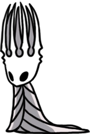
NPCS Vagantes
Aparecem em diferentes locais
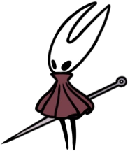
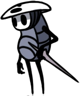
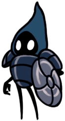
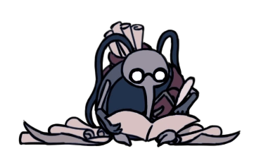

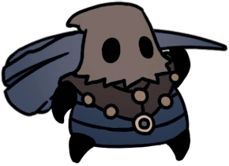
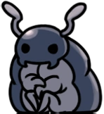
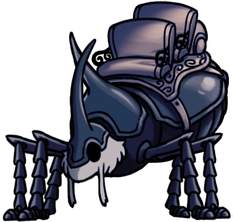
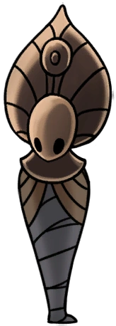